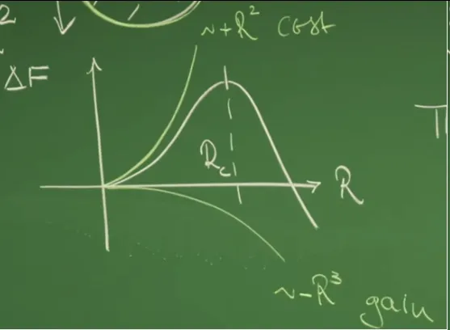

引言：从旋节分解到成核理论的动力学转向¶
在第14讲中，液态混合物的相分离动力学被置于守恒型序参量的连续场论框架之下，通过 Cahn–Hilliard 方程（Model B）系统性地加以刻画。该方程以连续性方程为出发点，将粒子数守恒与非平衡热力学中的昂萨格输运关系相结合，使浓度场的时间演化由广义化学势梯度所驱动。在这一框架下，热力学失稳区（spinodal region，\(f''(c)<0\)）内的均匀态对任意微小涨落都是不稳定的，线性稳定性分析揭示了典型的模态选择机制：一段有限波数区间内的扰动被指数放大，并由最快增长模 \(q_{\max}\) 决定初期斑图的特征尺度。这一机制对应于旋节分解，其核心动力学特征是"上坡扩散"，即物质逆着浓度梯度自发聚集。


然而，Cahn–Hilliard 方程在线性化意义下所能描述的，仅限于相分离的早期阶段。随着浓度起伏振幅的增大，非线性效应不可避免地占据主导，体系逐渐演化为由界面分隔的富集相与贫相区域。在这一阶段，单纯依赖色散关系已不足以刻画动力学过程；更重要的是，旋节分解机制本身只适用于热力学不稳定区。对于位于双节线（binodal）与旋节线之间的亚稳态区域（\(f''(c)>0\)），均匀态在局部上是线性稳定的，微小扰动会被迅速抑制，Cahn–Hilliard 的线性失稳机制不再适用。这一区域的相分离，必须通过性质截然不同的途径启动。
![课堂PPT截图，Cahn–Hilliard 方程的线性稳定性分析。通过对均匀态的小扰动进行线性化与傅里叶分析，得到色散关系 \(\sigma(q)=-\Lambda(\bar c)q^2[f''(\bar c)+\kappa q^2]\)。当 \(f''(\bar c)<0\) 时，存在不稳定波数区间并由 \(q_{\max}\) 选定早期结构尺度；当 \(f''(\bar c)>0\) 时，均匀态线性稳定，微小扰动全部衰减。](https://files.mdnice.com/user/129153/7c10e96b-2598-4b14-b4fd-87ce0b2ad68b.png)
第15讲正是围绕这一亚稳态区域展开。在该区域内，体系虽然存在自由能更低的分相状态，但要从初始均匀态跃迁到该状态，必须跨越一个有限的自由能势垒。相分离不再由无穷小涨落自发触发，而是依赖于有限幅度的热涨落，在母相中局部形成一个高浓度的新相胚胎，即液滴或成核体。只有当该液滴的尺度超过某一临界值时，体积自由能的收益才能压倒界面能的代价，使其进入自发生长阶段。这一物理图像构成了经典成核理论（Classical Nucleation Theory）的出发点，也标志着相分离动力学从线性失稳向能垒控制的范式转变。
与旋节分解中弥散的浓度波不同，成核过程从一开始便涉及清晰的相界面。因此，界面不再只是 Cahn–Hilliard 泛函中通过梯度项隐式引入的调节机制，而成为一个具有明确热力学与力学意义的物理对象。界面张力、曲率以及由此引发的压强差和化学势修正，成为决定液滴稳定性与演化方向的关键因素。本讲将从自由能的体积项与表面项竞争出发，推导临界液滴半径与成核势垒；随后引入拉普拉斯压强，建立弯曲界面的力学平衡条件；在此基础上，结合化学势连续性与渗透压关系，得到著名的 Gibbs–Thomson 关系，揭示界面曲率如何系统性地抬高小液滴的平衡浓度。
在完成界面热力学的刻画之后，分析将进一步转向单个液滴的动力学问题。在尖锐界面极限与时间尺度分离假设下，液滴外部的浓度场满足拉普拉斯方程，其解析解呈现出 \(1/r\) 型的长程扩散尾迹。界面处由 Gibbs–Thomson 关系给定的边界条件，决定了物质通量的方向，从而导出液滴生长或收缩的判据，并在动力学层面重新显现临界半径的概念。这一单液滴理论为理解多液滴体系中的物质再分配奠定了基础。
需要强调的是，本讲所建立的单液滴动力学并非终点。当体系中存在大量液滴时，由于 Gibbs–Thomson 关系导致的小液滴溶解、大液滴生长的系统性趋势，体系将进入以扩散为限制机制的粗化阶段。这一阶段的统计描述与标度行为，尤其是特征尺度随时间满足 \(L(t)\sim t^{1/3}\) 的规律，将在下一讲（第16讲）中通过 Lifshitz–Slyozov–Wagner 理论得到系统阐述，从而完成从成核到熟化的完整动力学图景。
1. 经典成核理论 (Classical Nucleation Theory)¶
这节课从第14讲的“旋节分解（spinodal decomposition）”继续向前推进：当体系不再处于$ f''(c)<0 $的线性失稳区，而进入双节线（binodal）与旋节线（spinodal）之间的亚稳态区时，均匀态对小扰动是稳定的，线性稳定性分析不再给出“自发长出来”的模态。相分离若要发生，必须依赖有限幅度的热涨落在母相中生成一个有限尺寸的高浓度胚胎（液滴）。
经典成核理论的任务，就是在“体相自由能下降”与“界面能上升”的竞争中，给出液滴是否会继续长大（growth）还是回缩消失（dissolution）的定量判据，并由此引出临界半径\(R_c\)与成核势垒\(\Delta F(R_c)\)。
1.1 自由能景观与亚稳态的物理图像¶

教授首先回到描述二元混合物的自由能景观。对称情形下，局域自由能密度常用双势阱来表示，例如：
其中\(u>0\)保证热力学稳定性，而在相分离状态（低于临界点）取\(r>0\)时，\(c=0\)成为不稳定点并出现两个等价极小值。由\(f'(c)=-rc+uc^3=0\)得到平衡浓度：
这些极小值对应两相（贫相/富相）的体相（bulk）浓度。
亚稳态的含义是：体系的平均浓度\(\bar c\)位于双节线与旋节线之间，使得局域曲率$ f''(\bar c)>0 \(，因此小扰动不会放大。对任意小的局域起伏\)\delta c$，自由能的局部变化可用泰勒展开的二阶项近似：
当\(f''(\bar c)>0\)时有\(\Delta f>0\)，表明小涨落会被“抹平”，均匀态对小扰动线性稳定。正是这一点解释了：亚稳态区域中相分离不是“任意微小涨落都会长出来”，而是需要“足够大的扰动”。
当出现一次足够大的涨落，使得某个有限区域的浓度接近\(c_+\)并与外部母相（接近\(c_-\)或近似\(\bar c\)）之间形成清晰界面时，体系才可能整体降低自由能。此时自由能的改变不再由局部二阶项主导，而由“体积收益（bulk gain）”与“表面成本（surface cost）”共同决定。
1.2 自由能竞争机制：体积增益 vs. 表面成本¶
为使计算可控，这节课采用经典成核理论的理想化设定：在平均浓度为\(\bar c\)的亚稳态母相中，形成一个半径为\(R\)的球形液滴，液滴内部近似为富相浓度\(c_+\)，外部为母相浓度（近似\(\bar c\)或接近\(c_-\)）。此处的关键近似是尖锐界面：把界面宽度视为远小于\(R\)，于是界面能可用一个几何表面上的表面张力\(\gamma\)来表征。
为了避免符号混淆，这里将单位体积自由能差明确写为：
在亚稳态设定下 $f(c_+)<f(\bar c) $，因此：
这表示：若某一体积单元从\(\bar c\)转为\(c_+\)，其体相自由能降低（释放自由能）。
1.2.1 体积自由能（Volume term）¶
球形液滴在三维空间体积为：
因此体积项贡献为：
由于\(\Delta f<0\)，该项为负，且随\(R^3\)增长，代表越大的液滴越能获得体相自由能收益。
物理意义：体积项对应占据更深自由能谷底的收益，是推动相变发生的驱动力；它只与体相（bulk）有关，与界面细节无关。
1.2.2 表面自由能（Surface term）¶
液滴的出现必然产生界面。界面在Cahn–Hilliard自由能泛函中来自梯度罚项\(\frac{\kappa}{2}(\nabla c)^2\)；在尖锐界面近似下，这一整段过渡层的能量被“凝聚”为表面张力\(\gamma\)（单位面积的过剩自由能）。球形液滴表面积为:
因此表面项贡献为:
其中\(\gamma>0\)。该项随\(R^2\)增长，代表制造界面必须付出代价。
物理意义：表面项是阻碍成核的根源。小液滴表面积相对体积占比更大，因此在小\(R\)区间表面代价占优，液滴倾向于消失。
1.3 总自由能变化与临界半径（Critical radius）¶
将体积项与表面项相加得到经典成核自由能曲线：
由于\(\Delta f<0\)，也常写成强调收益/成本符号的形式：
\(R^2\)项是界面成本，\(R^3\)项是体积收益。
曲线形状与物理诠释：

-
当\(R\to 0\)时，\(R^2\)项主导，\(\Delta F(R)\approx 4\pi\gamma R^2>0\)，微小液滴会因“纯成本”而回缩消失。
-
当\(R\)足够大时，\(R^3\)项主导，\(\Delta F(R)\)转为负并随\(R\)降低，液滴一旦足够大便会自发长大以持续降低自由能。
-
因为两项随\(R\)的幂次不同，\(\Delta F(R)\)必然存在一个极大值点；该点对应临界半径\(R_c\)，是“回缩”与“长大”的分界。
临界半径的推导：
对\(\Delta F(R)=4\pi\gamma R^2-\frac{4\pi}{3}R^3|\Delta f|\)求导：
令其为零并排除平凡解\(R=0\)：
注意\(|\Delta f|\)出现在分母，意味着驱动力越大，临界半径越小。
将\(R_c\)代回\(\Delta F(R)\)得到势垒高度：
物理含义：
-
\(R_c\propto \gamma\)：界面张力越大，制造界面的代价越高，必须生成更大的胚胎才能“赚回”界面成本。
-
\(R_c\propto 1/|\Delta f|\)：\(|\Delta f|\)越大，体相收益越强，越容易形成可生长的液滴；当体系更接近旋节线时，等效驱动力增强，\(R_c\)显著降低，成核更容易发生。
-
\(\Delta F(R_c)\propto \gamma^3/|\Delta f|^2\)：势垒对\(\gamma\)极其敏感（立方），这解释了为什么表面张力的微小变化会导致成核速率出现数量级差异。若把成核视为热激活过程，典型形式为\(J\sim \exp[-\Delta F(R_c)/(k_B T)]\)，势垒越高，成核越稀有。
到此为止完成了成核势垒的热力学部分：亚稳态区之所以需要有限扰动，是因为必须先支付界面代价，再通过体相收益把这笔代价偿还。下一节将把界面从能量代价\(\gamma\)提升为力学实体，引入拉普拉斯压强与弯曲界面的平衡条件，从而为Gibbs–Thomson关系铺路。
2. 界面热力学与拉普拉斯压强¶
在第1小节中，成核过程被刻画为体相自由能收益与界面能成本之间的竞争，其中界面张力 \(\gamma\) 以参数形式进入自由能表达式。这小节将从力学与热力学平衡的角度理解“界面”本身的物理属性。关键转变在于：一旦界面发生弯曲，它不再只是自由能泛函中的一个被动能量项，而是成为一个能够对两侧流体施加力学作用的实体。拉普拉斯压强（Laplace Pressure）正是这种界面力学效应的集中体现，也是后续吉布斯–汤姆逊（Gibbs–Thomson）关系的出发点。
2.1 平直界面的参考系¶
首先以平直界面作为基准情形。设两相通过一平直界面相互接触，对应曲率极限 \(R \to \infty\)。在热力学平衡下，界面两侧必须同时满足以下三个条件：
- 热平衡：界面两侧温度相同:
$$ T_{\mathrm{in}} = T_{\mathrm{out}} $$
- 化学平衡：界面两侧化学势相等:
$$ \mu_{\mathrm{in}} = \mu_{\mathrm{out}} $$
这一条件保证界面处不存在净的粒子扩散通量，否则物质会持续跨界面迁移。
- 力学平衡：界面两侧的热力学压强（或渗透压）相等:
$$ \Pi_{\mathrm{in}} = \Pi_{\mathrm{out}} $$
对于平直界面，若压强不相等，界面将整体平移直至力学平衡恢复。
平直界面的重要意义在于，它提供了“无曲率修正”的参考状态。后续所有由界面弯曲引起的修正，都可以理解为相对于这一基准状态的偏离。
2.2 弯曲界面的力学平衡与拉普拉斯压强¶
当界面弯曲并形成半径为 \(R\) 的球形液滴时，界面张力 \(\gamma\) 倾向于收缩界面以减小表面积。若液滴能够稳定存在，则界面收缩趋势必须由液滴内外的压强差来平衡。这节课采用虚功原理，对这一力学平衡条件进行推导。
考虑一个处于平衡态的球形液滴，其半径从 \(R\) 发生一个无穷小变化 \(dR\)。在这一虚变过程中，系统的总功必须为零。功的来源分为两部分：界面能的变化以及压强做的机械功。
首先考察界面能的变化。球形液滴的表面积为:
当半径增加 \(dR\) 时，面积变化为:
对应的界面能增量为:
这一项始终为正，表示扩展界面所需付出的能量成本。
其次考察体积膨胀所对应的机械功。液滴体积为:
体积变化为:
设液滴内部压强为 \(P_{\mathrm{in}}\)，外部压强为 \(P_{\mathrm{out}}\)，则压强差 \(\Delta P = P_{\mathrm{in}} - P_{\mathrm{out}}\) 在膨胀过程中做的机械功为:
在力学平衡条件下，界面能增加必须由压强做功完全补偿，因此有:
即,
消去公共因子 \(4\pi R\, dR\)，得到三维空间中的拉普拉斯压强公式:
从物理角度看，该结果表明：弯曲界面必然引入一个额外的压强差，且界面曲率越大（\(R\) 越小），所需的内部支撑压强越高。
本讲在液态混合物的不可压缩语境下，\(P\) 与 \(\Pi\) 都可作为“热力学压强”的表述方式。第2小节推导拉普拉斯压强时使用 \(P_{\mathrm{in}}-P_{\mathrm{out}}\) 更贴近力学直觉；第3小节与后续推导使用 \(\Pi=\mu c-f\) 更便于与自由能密度函数衔接。两者在此处指代同一类压强跃迁，后文将主要使用 \(\Pi\) 记号。
2.3 任意维度下的推广与物理意义¶
上述推导针对三维球形液滴。更一般地，在 \(d\) 维空间中，半径为 \(R\) 的超球面面积与体积分别满足:
因此有:
将这一标度关系代入虚功平衡条件，可以得到任意维度下的拉普拉斯压强形式:
其中 \(\Pi\) 用以强调压强在热力学意义下也可视为渗透压。
这一结果揭示了几个关键物理事实：
压强不连续性
弯曲界面处的压强必然存在跳变，内部压强始终高于外部压强。界面因此成为力学意义上的“源项”，而非简单的分隔面。
曲率驱动效应
压强差与界面曲率 \(1/R\) 成正比。平直界面极限 \(R \to \infty\) 下，拉普拉斯压强消失，自然回到第2.1节讨论的平直界面平衡条件。
小尺度效应的放大
当 \(R\) 进入微观尺度时，\(\gamma/R\) 可达到极大的数值，使得局部压强显著偏离体相条件。这一效应直接改变界面附近的化学势与平衡浓度，是吉布斯–汤姆逊关系产生的根本原因。
推导弯曲界面下的浓度偏移规律，并由此建立吉布斯–汤姆逊关系。
3. 吉布斯-汤姆逊关系 (Gibbs-Thomson Relation)¶
第2小节已经表明，弯曲界面会引入拉普拉斯压强，使得界面两侧的热力学压强（或渗透压）不再相等。更关键的是，这个力学效应必然“反馈”到热力学平衡条件上：若液滴内部压强升高，而界面仍需满足化学平衡，则界面附近的平衡浓度必须发生系统性偏移。这小节将把化学势连续性与渗透压跃迁联立起来，得到弯曲界面下浓度偏移的标度律 \(\delta c \propto 1/R\)，这就是吉布斯–汤姆逊关系。该关系随后将成为解释多液滴体系中物质再分配与奥斯特瓦尔德熟化（Ostwald Ripening）的核心起点。
需要注意的是，Model B 的完整化学势为 \(\mu=\delta\mathcal F/\delta c=f'(c)-\kappa\nabla^2 c\)。这节课在推导 Gibbs–Thomson 关系时使用 \(\mu\approx f'(c)\)，对应的是界面两侧的体相近似：远离界面厚度 \(\xi\) 的区域内浓度近似均匀，\(\nabla^2 c\approx 0\)。曲率与梯度能的效应已通过界面张力 \(\gamma\) 与拉普拉斯压强条件被“打包”进入边界条件。
3.1 自由能密度在两相平衡点附近的泰勒展开¶
考虑一类对称二元混合物，其局域自由能密度 \(f(c)\) 具有双势阱结构，两相平衡浓度分别记为 \(c_-\) 与 \(c_+\)。在平直界面参考态（\(R\to\infty\)）下，这两个点是自由能密度的极小值点，因此满足:
并且曲率 \(f''(c_\pm)>0\)。
当界面弯曲且半径有限时，液滴内外的浓度不再严格等于 \(c_\pm\)，而是发生小幅偏移。定义:
其中 \(\delta c_{\mathrm{in}}\) 与 \(\delta c_{\mathrm{out}}\) 被视为小量。把自由能密度在 \(c_\pm\) 附近作二阶泰勒展开:
利用 \(f'(c_\pm)=0\)，可得更简洁的形式:
物理意义：在两相平衡点附近，自由能对浓度偏移的代价由曲率 \(f''(c_\pm)\) 控制，偏移越大，体相自由能上升越快。
3.2 化学势连续性给出的第一条约束¶
弯曲界面可以导致压强跳变，但化学平衡条件并不会因此消失。界面处若存在 \(\mu_{\mathrm{in}}\neq \mu_{\mathrm{out}}\)，将产生跨界面的净扩散通量，直至化学势重新相等。因此采用的第一条平衡条件是:
化学势取为局域自由能密度对浓度的导数:
由上一小节的泰勒展开可得:
令 \(\mu_{\mathrm{in}}=\mu_{\mathrm{out}}\) 得到第一条约束:
对于对称二元混合物，两个势阱的曲率相同：
因此得到更简洁的结论：
物理意义：在对称情形下，界面弯曲引起的“热力学修正”在两侧具有相同幅度的偏移，剩下的任务是由力学条件决定偏移的大小与符号
3.3 渗透压跃迁与浓度偏移的定量求解¶
第2小节已经给出弯曲界面下的力学平衡条件：界面两侧的渗透压差由拉普拉斯压强给定：
其中 \(d\) 为空间维数，三维球形液滴对应 \(d=3\)。
将渗透压写成自由能的勒让德变换形式：
因此，
由于化学势连续性给出 \(\mu_{\mathrm{in}}=\mu_{\mathrm{out}}\equiv \mu\)，渗透压差可写为：
在小偏移近似下，保留到 \(\delta c\)。为了避免把推导写成冗长代数，压强差的线性化只保留一条关键链：在体相近似下 \(\mu \approx f''(c_+)\delta c\)，且 \(f(c_\pm+\delta c)\approx f(c_\pm)+\frac12 f''(c_\pm)\delta c^2\)。将这些代入 \(\Pi=\mu c-f\) 并取差，可得到主导项来自 \(\mu(c_{\mathrm{in}}-c_{\mathrm{out}})\)，而 \(f\) 的二阶修正只提供更高阶小量，因此：
该关系将曲率诱导的浓度偏移与拉普拉斯压强直接连接起来。
物理意义：浓度偏移 \(\delta c\) 会通过化学势项 \(\mu c\) 与自由能项 \(f\) 的竞争，转化为一个可观测的压强差。
将其与拉普拉斯压强条件联立：
解得吉布斯–汤姆逊关系的浓度形式：
3.4 毛细长度与物理诠释¶
吉布斯–汤姆逊关系的核心标度是 \(\delta c \propto 1/R\)。为提取长度尺度，这节课把系数部分定义为毛细长度的组合。由于 \(c_{\mathrm{in}}=c_+ + \delta c\) 与 \(c_{\mathrm{out}}=c_- + \delta c\) 都是浓度量，常用无量纲写法是把偏移写成相对偏移：
其中毛细长度 \(\ell_\gamma^\pm\) 定义为：
由此可直接回到绝对偏移形式：
并与上一小节的 \(\delta c\) 表达式相一致。
这组表达式的物理意义非常明确：
曲率抬升溶解度
在这节课讨论的亚稳态区，\(f''(c_+)>0\)，且 \(\gamma>0\)、\(R>0\)、\(c_+ - c_->0\)，因此 \(\delta c>0\)，这意味着弯曲界面会把界面附近的平衡浓度整体向上抬升，小液滴由于 \(1/R\) 更大而更“可溶”。
小液滴更易失稳
\(R\) 越小，\(\delta c\) 越大，界面附近的平衡浓度越高，更容易向外界释放物质。相反，大液滴的曲率更小，界面附近的平衡浓度更接近平直界面值，更容易吸收来自外界的物质。
奥斯特瓦尔德熟化的热力学根源
多液滴体系中，不同半径导致不同的界面平衡浓度，从而在扩散场中建立系统性的浓度梯度。物质由小液滴向大液滴迁移并非“偶然”，而是由 \(\delta c \sim 1/R\) 的曲率效应强制产生的方向性趋势。
4. 单个液滴的生长与收缩动力学¶
上一小节给出了弯曲界面处的热力学边界条件：由于吉布斯–汤姆逊效应，界面外侧的平衡浓度会随曲率发生偏移，呈现 \(1/R\) 的标度。这小节在此基础上引入时间维度，回答一个更具体的问题：给定半径为 \(R\) 的液滴处在远场浓度为 \(c_\infty\) 的环境中，液滴将会生长还是收缩，\(R(t)\) 的演化速率由哪些物理量控制。关键思想是把“界面热力学”转化为“扩散边界值问题”，再用界面处的扩散通量与质量守恒把浓度场解压缩成一个关于 \(R(t)\) 的动力学方程。
4.1 尖锐界面极限 (Sharp Interface Limit)¶
为获得解析结果，采用尖锐界面近似。假设界面宽度 \(\xi\) 远小于液滴半径 \(R\)，从而存在尺度分离：\(\xi \ll R\)。该近似在远离临界点的深淬火条件下更为可靠，因为临界点附近 \(\xi\) 会显著增大并削弱“几何界面”的概念。
尖锐界面近似的含义可以分为三个层面：
-
几何化：界面被视为零厚度球面，其位置为 \(r=R\) 。
-
分区求解：空间被分成液滴内部 \(r<R\) 与液滴外部 \(r>R\) 两个区域，体相内浓度近似为常数。
-
边界条件：界面处 \(r=R\) 的浓度取值由吉布斯–汤姆逊关系给定，记为 \(c_R\)，并由此决定扩散通量方向。
这一节的目标是先求出外部区域 \(r>R\) 的准稳态浓度场 \(c(r)\)，再据此计算界面通量与 \(\dot R\) 。
4.2 准静态近似 (Quasi-static Approximation)¶
尖锐界面只解决了空间上的尺度分离，还需要时间上的尺度分离才能把扩散场近似为“瞬时稳态”。这节课比较两个时间尺度：
-
扩散时间尺度：\(\tau_{\mathrm{diff}} \sim R^2/D\)
-
半径演化时间尺度：\(\tau_{\mathrm{grow}} \sim R/\dot R\)
当满足 \(\tau_{\mathrm{diff}} \ll \tau_{\mathrm{grow}}\) 时，浓度场对 \(R(t)\) 的变化响应很快，可以认为在半径缓慢演化的任意时刻，外部浓度分布都已调整到当前 \(R\) 下的稳态形状。于是扩散方程中的时间导数可以忽略。
在外部区域 \(r>R\)，若扩散系数 \(D\) 近似常数，准静态条件写为：
从而得到：
进一步化简为拉普拉斯方程：
该方程是一个纯几何的边值问题，所有动力学信息将通过边界条件 \(c(R)=c_R\) 与远场条件 \(c(\infty)=c_\infty\) 注入。
4.3 浓度场的解析解与静电学类比¶
在尖锐界面与准静态近似下，液滴外部区域 \(r>R\) 的浓度场满足拉普拉斯方程。由于体系具有球对称性，浓度 \(c(\mathbf r)\) 仅依赖径向坐标 \(r\)，方程可化为：
该方程是三维空间中最基本的调和方程之一，其一般解可通过两次积分得到：
这一 \(1/r\) 形式与静电学中孤立点电荷的势函数完全同构，其物理含义在于：在三维空间中，由局域“源”或“汇”激发的扩散场具有长程尾迹，而不会在有限距离内快速衰减。
积分常数 \(A\) 与 \(B\) 由边界条件唯一确定。首先，远离液滴的区域应当恢复到均匀背景浓度，因此远场条件为：
由此直接得到：
其次，在界面位置 \(r=R\)，浓度必须连续并取界面外侧的平衡值 \(c_R\)，该值已由上一节的 Gibbs–Thomson 关系给定。因此界面条件为：
将通解代入界面条件可得：
从而确定第二个积分常数：
综上，液滴外部 \(r>R\) 的浓度分布可写为：
也可以等价地写成：
这里 \(c_R\) 是界面外侧的浓度值，其大小由界面曲率通过 Gibbs–Thomson 关系所决定。

这一解析结果带来两个直接而重要的物理推论。
首先，扩散场是长程的。由于 \(c(r)-c_\infty\sim 1/r\)，单个液滴对周围环境的影响不会局限在局部，而是通过缓慢衰减的扩散尾迹传播到较远距离。这意味着在多液滴体系中，不同液滴之间必然通过扩散场相互耦合，而无法彼此独立演化。
其次，液滴在扩散场中可以被视为“源”或“汇”。当 \(c_R>c_\infty\) 时，界面处浓度高于远场，径向梯度指向外侧，扩散通量从液滴流向外界，液滴倾向于溶解；当 $c_R<c_\infty $ 时，界面处浓度低于远场，扩散通量指向液滴内部，液滴倾向于生长。这一判据将界面热力学条件与后续的半径演化动力学直接连接起来。
4.4 界面通量与半径演化方程¶
虽然求解的是准静态浓度场，但界面处的径向通量决定了液滴半径的时间演化。根据 Fick 第一定律，界面处的径向通量密度定义为：
对 \(c(r)=c_\infty+(c_R-c_\infty)R/r\) 求导得到：
代入 \(r=R\) 得到：
因此界面处的通量为：
该式直接给出通量方向的判据：若 $c_\infty>c_R $ 则 \(J>0\) 表示物质净流入液滴，若 $c_\infty<c_R $ 则 \(J<0\) 表示物质净流出液滴。
界面守恒关系来自几何意义上的体相置换：界面在时间 \(dt\) 内前进 \(dR=\dot R dt\)，对应单位面积上新增的高浓度相体积分为 \((c_{\mathrm{in}}-c_{\mathrm{out}})dR\)，必须由界面处的扩散通量 \(Jdt\) 提供，因此得到：
于是得到单液滴半径的动力学方程：
其中 \(c_{\mathrm{in}}\) 与 \(c_{\mathrm{out}}\) 分别是界面内外体相浓度，尖锐界面近似下可取为接近 \(c_+\) 与 \(c_-\) 的常数。
为了把动力学判据写成几何尺度竞争的形式，这节课将界面浓度写成吉布斯–汤姆逊形式。若用平直界面外侧平衡浓度记为 \(c_{\mathrm{eq}}\)，则弯曲界面上：
其中 \(\ell_\gamma\) 为毛细长度。将其代入 \(\dot R\) 方程得到：
定义远场过饱和度为：
可把方程写成更直观的结构：
该形式清楚显示两种竞争机制：
-
\(\Delta c_0/R\) 项由远场过饱和驱动，倾向于使液滴生长。
-
\(c_{\mathrm{eq}}\ell_\gamma/R^2\) 项由曲率抬升界面浓度驱动，倾向于使小液滴溶解。
由 \(\dot R=0\) 得到动力学临界半径：
因此液滴命运由 \(R\) 与 \(R_c\) 的大小关系决定：
-
当 \(R>R_c\) 时有 \(c_\infty>c_R\)，通量指向液滴，液滴生长。
-
当 $R<R_c $ 时有 $c_\infty<c_R $，通量背离液滴，液滴收缩。
这一结论在动力学层面重新出现了临界尺寸的概念，但此处的 \(R_c\) 不再来自第1节的自由能极值条件，而是来自远场过饱和驱动与曲率诱导溶解度升高之间的平衡。多液滴体系中，不同 \(R\) 对应不同的 \(c_R\)，由此引发的扩散耦合将系统性地把物质从小液滴输送到大液滴，这正是下一讲奥斯特瓦尔德熟化的直接动力学起点。
5. 代码实践：三维相场中的液滴形成与生长¶
代码实践部分将首先复现经典成核理论中的自由能图像。通过直接绘制 \(\Delta F(R)\) 随液滴半径变化的解析表达式，展示体积自由能收益与表面能成本之间的竞争，以及由此产生的临界半径与成核势垒。这一结果对应第1小节的热力学分析，回答为什么在亚稳态区需要有限扰动才能触发相分离。然后，利用拉普拉斯方程的球对称解析解，构造界面外部 \(c(r)\sim 1/r\) 的扩散场，并在界面处施加 Gibbs–Thomson 边界条件。该计算直接对应第3小节与第4小节的推导，展示界面曲率如何抬升局部平衡浓度，以及这一抬升如何决定扩散通量方向与液滴的生长或收缩趋势。
最后，通过引入三维动力学模拟，数值求解三维 Cahn–Hilliard 方程（Model B）的相场演化。系统从带有小幅随机扰动的非零平均浓度初态出发，在守恒动力学约束下自发形成富相与贫相分离的空间结构。通过选择非临界平均浓度，演化结果呈现出液滴状而非双连续的形态。
import numpy as np
import matplotlib.pyplot as plt
# Set black background style
plt.style.use('dark_background')
plt.rcParams['figure.facecolor'] = 'black'
plt.rcParams['axes.facecolor'] = 'black'
plt.rcParams['savefig.facecolor'] = 'black'
plt.rcParams['savefig.edgecolor'] = 'none'
plt.rcParams['font.family'] = 'sans-serif'
plt.rcParams['font.size'] = 12
def plot_nucleation_barrier():
"""
Function 1: Visualization of Classical Nucleation Theory (CNT)
Plotting the Gibbs Free Energy change (Delta F) vs Droplet Radius (R).
Demonstrates the competition between Surface Cost (R^2) and Volume Gain (R^3).
"""
# 1. Define Physical Parameters (Arbitrary Simulation Units)
gamma = 1.0 # Surface Tension (Cost per unit area)
delta_f = 0.5 # Bulk Free Energy Difference per unit volume (|f_new - f_old|)
# 2. Define Radius Domain
R = np.linspace(0, 10, 300)
# 3. Calculate Energy Components
# Surface Term (Positive Cost): proportional to Area ~ R^2
F_surf = 4 * np.pi * R**2 * gamma
# Volume Term (Negative Gain): proportional to Volume ~ R^3
# Note: The gain reduces the free energy, hence the negative sign.
F_vol = - (4/3) * np.pi * R**3 * delta_f
# Total Free Energy Change
F_total = F_surf + F_vol
# 4. Determine Critical Radius (Rc) Analytical Solution
# dF/dR = 8*pi*R*gamma - 4*pi*R^2*delta_f = 0 => Rc = 2*gamma/delta_f
Rc = 2 * gamma / delta_f
# Calculate the Barrier Height (Activation Energy)
F_max = 4 * np.pi * Rc**2 * gamma - (4/3) * np.pi * Rc**3 * delta_f
# 5. Plotting
fig, ax = plt.subplots(figsize=(10, 7))
# Plot components
ax.plot(R, F_surf, '--', color='#e74c3c', alpha=0.6, linewidth=2, label='Surface Cost ($+4\pi R^2 \gamma$)')
ax.plot(R, F_vol, '--', color='#3498db', alpha=0.6, linewidth=2, label='Volume Gain ($-4/3\pi R^3 |\Delta f|$)')
# Plot Total Energy
ax.plot(R, F_total, '-', color='#2c3e50', linewidth=3, label='Total Free Energy $\Delta F(R)$')
# Annotate Critical Radius (Nucleation Barrier)
ax.axvline(Rc, color='#27ae60', linestyle=':', alpha=0.8, linewidth=2)
ax.scatter([Rc], [F_max], color='#27ae60', s=150, zorder=5, edgecolors='white')
# Add descriptive text and arrows
ax.annotate(f'Critical Radius $R_c={Rc:.1f}$', xy=(Rc, F_max), xytext=(Rc+1.5, F_max+20),
arrowprops=dict(facecolor='#27ae60', shrink=0.05), fontsize=12, color='#27ae60')
# Calculate appropriate y-values from the F_total array for annotation
# Find the index in the R array closest to the desired radius
stable_radius_idx = min(np.argmin(np.abs(R - (Rc+2))), len(F_total)-1)
unstable_radius_idx = min(np.argmin(np.abs(R - (Rc/2))), len(F_total)-1)
ax.annotate('Stable Growth Region\n(Spontaneous)', xy=(Rc+2, F_total[stable_radius_idx]),
xytext=(Rc+3, 50), arrowprops=dict(facecolor='black', arrowstyle='->'), fontsize=10)
ax.annotate('Unstable Region\n(Dissolution)', xy=(Rc/2, F_total[unstable_radius_idx]),
xytext=(0.5, 50), arrowprops=dict(facecolor='black', arrowstyle='->'), fontsize=10)
# Axis labels and Title
ax.set_title('Classical Nucleation Theory: The Free Energy Barrier', fontsize=16, fontweight='bold', pad=20)
ax.set_xlabel('Droplet Radius $R$', fontsize=14)
ax.set_ylabel('Free Energy Change $\Delta F$', fontsize=14)
ax.axhline(0, color='gray', linewidth=1)
# Set limits for better visibility
ax.set_ylim(-150, F_max * 1.5)
ax.set_xlim(0, 10)
ax.legend(fontsize=12, loc='lower right', frameon=True)
plt.tight_layout()
plt.savefig('nucleation_barrier.png', dpi=300, bbox_inches='tight')
plt.close()
def plot_concentration_profile():
"""
Function 2: Concentration Profile around a Single Droplet
Visualizes the Gibbs-Thomson effect and the quasi-static diffusion field (1/r decay).
Corresponds to the solution of Laplace equation: c(r) = c_inf + (c_R - c_inf) * (R/r)
"""
# 1. Define Parameters
R_droplet = 2.0 # Radius of the droplet
c_inf = 0.4 # Far-field concentration (Supersaturated background)
# Gibbs-Thomson Shift:
# Small droplets have higher surface concentration.
# Let's assume the shift raises c_surface ABOVE c_inf for a dissolving droplet,
# or BELOW c_inf for a growing droplet.
# Scenario: Growing Droplet (Flux goes inward) -> c_inf > c_surface > c_eq
# Scenario: Gibbs-Thomson Effect simply sets c_surface.
# Let's visualize a case where c_surface is elevated due to curvature.
c_eq_flat = 0.3 # Equilibrium concentration for flat interface
capillary_length = 0.5 # l_gamma
# c_surface (Gibbs-Thomson) = c_eq_flat * (1 + l_gamma / R)
c_surface = c_eq_flat * (1 + capillary_length / R_droplet)
c_in = 0.9 # Concentration inside the droplet (high density phase)
# 2. Define Spatial Domain
# Inside the droplet: 0 to R
r_in = np.linspace(0, R_droplet, 100)
# Outside the droplet: R to Far field
r_out = np.linspace(R_droplet, 10.0, 400)
# 3. Calculate Profiles
# Inside: Constant profile (solution to Laplace eq regular at origin)
c_profile_in = np.full_like(r_in, c_in)
# Outside: 1/r decay behavior
# c(r) = c_inf + (c_surface - c_inf) * (R / r)
c_profile_out = c_inf + (c_surface - c_inf) * (R_droplet / r_out)
# 4. Plotting
fig, ax = plt.subplots(figsize=(10, 7))
# Plot Inside
ax.plot(r_in, c_profile_in, '-', color='#f39c12', linewidth=3, label='Droplet Interior (High Density)')
# Plot Outside
ax.plot(r_out, c_profile_out, '-', color='#8e44ad', linewidth=3, label='Matrix (Diffusion Field ~ $1/r$)')
# Plot Interface Boundary
ax.axvline(R_droplet, color='black', linestyle='--', linewidth=1.5, label='Interface Position $R$')
# Annotations for key concentration levels
# c_in
ax.text(0.5, c_in + 0.02, '$c_{in}$ (Droplet Phase)', color='#f39c12', fontweight='bold')
# c_surface (Gibbs-Thomson)
ax.plot([R_droplet], [c_surface], 'o', color='red', zorder=10)
ax.annotate(f'$c(R) = c_{{out}} + \delta c$\n(Gibbs-Thomson)',
xy=(R_droplet, c_surface), xytext=(R_droplet+1.5, c_surface+0.1),
arrowprops=dict(facecolor='red', arrowstyle='->'), color='red')
# c_inf
ax.axhline(c_inf, color='gray', linestyle=':', linewidth=2, label='Far Field $c_{\infty}$')
ax.text(9, c_inf - 0.04, '$c_{\infty}$', color='gray', fontsize=12)
# Visualizing the Gradient (Flux)
ax.annotate('Flux $J$ (Growth)', xy=(R_droplet+1, (c_surface+c_inf)/2), xytext=(R_droplet+3, (c_surface+c_inf)/2 + 0.05),
arrowprops=dict(facecolor='blue', arrowstyle='->', lw=2), fontsize=12, color='blue')
# Titles and Labels
ax.set_title('Concentration Profile: Gibbs-Thomson Effect & Diffusion Field', fontsize=16, fontweight='bold', pad=20)
ax.set_xlabel('Radial Distance $r$', fontsize=14)
ax.set_ylabel('Concentration $c(r)$', fontsize=14)
ax.legend(fontsize=12, loc='center right')
ax.grid(True, linestyle='--', alpha=0.5)
plt.tight_layout()
plt.savefig('concentration_profile.png', dpi=300, bbox_inches='tight')
plt.close()
from matplotlib.animation import FuncAnimation, PillowWriter
from mpl_toolkits.mplot3d import Axes3D # noqa: F401
def ch3d_simulate(
N=64,
L=64.0,
M=1.0,
r=1.0,
u=1.0,
kappa=1.0,
dt=0.2,
n_steps=1800,
sample_steps=(0, 300, 600, 900, 1200, 1500, 1800),
seed=42,
mean_c=0.12,
noise_amp=0.02,
):
"""
3D Cahn–Hilliard (semi-implicit spectral), periodic boundary conditions
∂t c = M ∇² ( -r c + u c^3 - κ ∇² c )
mean_c != 0 makes domains droplet-like (off-critical quench)
"""
rng = np.random.default_rng(seed)
dx = L / N
c = mean_c + noise_amp * rng.standard_normal((N, N, N))
k = 2.0 * np.pi * np.fft.fftfreq(N, d=dx)
kx, ky, kz = np.meshgrid(k, k, k, indexing="ij")
k2 = kx**2 + ky**2 + kz**2
k4 = k2**2
denom = 1.0 - dt * (M * r * k2 - M * kappa * k4)
denom[0, 0, 0] = 1.0
snapshots = {}
snapshots[0] = c.copy()
for step in range(1, n_steps + 1):
c_hat = np.fft.fftn(c)
c3_hat = np.fft.fftn(c**3)
numer = c_hat - dt * (M * u * k2) * c3_hat
c_hat_new = numer / denom
c_hat_new[0, 0, 0] = c_hat[0, 0, 0] # exact mass conservation
c = np.real(np.fft.ifftn(c_hat_new))
if step in sample_steps:
snapshots[step] = c.copy()
return snapshots, dx
def save_ch3d_slices_gif(snapshots, dx, out_gif="ch3d_slices.gif"):
"""
Make a GIF of central z-slices over time (pastel colormap on black)
"""
steps = sorted(snapshots.keys())
fields = [snapshots[s] for s in steps]
N = fields[0].shape[0]
z0 = N // 2
slices = [f[:, :, z0].T for f in fields] # transpose for nicer orientation
vlim = np.percentile(np.abs(np.stack(slices)), 99)
fig, ax = plt.subplots(figsize=(6, 6))
fig.patch.set_facecolor("black")
ax.set_facecolor("black")
# pastel, publication-like on dark background
cmap = plt.get_cmap("coolwarm")
im = ax.imshow(slices[0], origin="lower", vmin=-vlim, vmax=vlim, cmap=cmap)
ax.set_title(f"3D CH: central slice (step={steps[0]})", fontsize=12, color="white", pad=12)
ax.set_axis_off()
cb = fig.colorbar(im, ax=ax, fraction=0.046, pad=0.04)
cb.ax.yaxis.set_tick_params(color="white")
plt.setp(plt.getp(cb.ax.axes, "yticklabels"), color="white")
def update(i):
im.set_data(slices[i])
ax.set_title(f"3D CH: central slice (step={steps[i]})", fontsize=12, color="white", pad=12)
return (im,)
anim = FuncAnimation(fig, update, frames=len(steps), interval=250, blit=False)
anim.save(out_gif, writer=PillowWriter(fps=4))
plt.close(fig)
def save_ch3d_droplet_rotate_gif(snapshots, dx, out_gif="ch3d_droplet_rotate.gif"):
"""
Make a 3D rotating scatter GIF of the final field (droplet-like domains)
"""
last_step = max(snapshots.keys())
c = snapshots[last_step]
N = c.shape[0]
L = N * dx
# threshold for one phase; choose above mean to show droplets
thr = np.percentile(c, 70)
idx = np.argwhere(c > thr)
rng = np.random.default_rng(0)
max_pts = 70000
if idx.shape[0] > max_pts:
sel = rng.choice(idx.shape[0], size=max_pts, replace=False)
idx = idx[sel]
xs = (idx[:, 0] + 0.5) * dx
ys = (idx[:, 1] + 0.5) * dx
zs = (idx[:, 2] + 0.5) * dx
vals = c[idx[:, 0], idx[:, 1], idx[:, 2]]
# pastel colormap on black
cmap = plt.get_cmap("viridis")
fig = plt.figure(figsize=(7.2, 6.2))
fig.patch.set_facecolor("black")
ax = fig.add_subplot(111, projection="3d")
ax.set_facecolor("black")
sc = ax.scatter(xs, ys, zs, c=vals, s=1, alpha=0.35, cmap=cmap)
ax.set_xlim(0, L); ax.set_ylim(0, L); ax.set_zlim(0, L)
ax.set_xlabel("x", color="white")
ax.set_ylabel("y", color="white")
ax.set_zlabel("z", color="white")
ax.set_title(f"3D Cahn–Hilliard droplet-like domains (step={last_step})", color="white", pad=12)
# tick colors
ax.tick_params(colors="white")
cb = fig.colorbar(sc, ax=ax, fraction=0.035, pad=0.08)
cb.ax.yaxis.set_tick_params(color="white")
plt.setp(plt.getp(cb.ax.axes, "yticklabels"), color="white")
# rotate animation (top-journal style: clean, minimal)
def update(frame):
azim = frame
elev = 18 + 10 * np.sin(np.deg2rad(frame))
ax.view_init(elev=elev, azim=azim)
return (sc,)
frames = list(range(0, 360, 6))
anim = FuncAnimation(fig, update, frames=frames, interval=60, blit=False)
anim.save(out_gif, writer=PillowWriter(fps=18))
plt.close(fig)
if __name__ == "__main__":
print("Generating original two figures (unchanged)...")
plot_nucleation_barrier()
plot_concentration_profile()
print("Running 3D Cahn–Hilliard simulation and exporting GIFs...")
snapshots, dx = ch3d_simulate(
N=64,
L=64.0,
M=1.0,
r=1.0,
u=1.0,
kappa=1.0,
dt=0.2,
n_steps=1800,
sample_steps=(0, 300, 600, 900, 1200, 1500, 1800),
seed=42,
mean_c=0.12, # off-critical to encourage droplet morphology
noise_amp=0.02,
)
save_ch3d_slices_gif(snapshots, dx, out_gif="ch3d_slices.gif")
save_ch3d_droplet_rotate_gif(snapshots, dx, out_gif="ch3d_droplet_rotate.gif")
print("Done. Saved:")
print(" - nucleation_barrier.png")
print(" - concentration_profile.png")
print(" - ch3d_slices.gif")
print(" - ch3d_droplet_rotate.gif")

3D Cahn–Hilliard 液滴状结构的三维可视化展示了三维 Cahn–Hilliard（Model B）相场模型在长时间演化后的空间结构。系统从带有微弱噪声的非零平均浓度初态出发，在守恒动力学约束下逐步形成富相与贫相分离的空间图样。图中以三维散点方式可视化高浓度相的空间分布，可以看到体系中出现了多个近似球形的富相团簇，即“液滴状”结构。这些结构并非由外部几何约束强加，而是由体相自由能驱动与界面张力最小化共同自发形成的结果，体现了表面张力主导下球形界面的能量优势。该图直观对应教程中尖锐界面极限 + 三维球形液滴这一物理图像，是后续单液滴与多液滴动力学分析的空间背景。

三维 Cahn–Hilliard 演化过程的中心切片。开始的浓度场在空间中仅包含小幅、近似均匀的随机涨落，没有任何明显的空间结构或界面，后续液滴或界面结构从这些微小涨落中通过非平衡动力学逐步放大并形成。

单液滴周围的浓度分布与 Gibbs–Thomson 边界条件。液滴内部浓度近似为常数，对应高密度相；液滴外部浓度随径向距离呈现典型的 \(1/r\) 衰减，这是拉普拉斯方程在三维球对称条件下的解析解。界面处的浓度 \(c(R)\) 明显高于平直界面对应的平衡浓度，体现了 Gibbs–Thomson 效应：界面曲率抬升了局部平衡浓度。图中同时标出了远场浓度 \(c_\infty\) 与通量方向，显示当 \(c_\infty > c(R)\) 时，扩散通量指向液滴内部，从而驱动液滴生长。这一图像直接连接了界面热力学条件与后续的半径演化动力学。

经典成核理论中总自由能变化 \(\Delta F(R)\) 随液滴半径 \(R\) 的典型形状。表面自由能项随 \(R^2\) 增长，代表形成界面的能量成本；体积自由能项随 \(-R^3\) 增长，代表液滴内部转入稳定相所获得的体相能量收益。两者竞争导致总自由能曲线在某一临界半径 \(R_c\) 处达到最大值，对应成核势垒。图中区分了小于 \(R_c\) 的不稳定区域（液滴趋于溶解）与大于 \(R_c\) 的稳定生长区域（液滴自发生长）。从热力学角度解释了为何在亚稳态体系中需要有限幅度的涨落才能触发相分离，并为后续动力学中临界尺寸的再出现奠定了基础。
总结¶
这节课系统梳理了旋节分解机制失效之后，相分离在亚稳态区域中如何通过成核与界面动力学启动并推进。核心转变在于：相分离不再由线性不稳定性自动触发，而是必须跨越由界面张力引入的自由能势垒。经典成核理论通过体积自由能收益与表面能成本的竞争，定量给出了临界半径与成核势垒，从热力学层面解释了“有限扰动”的必要性。
在此基础上，这节课将界面从自由能泛函中的参数项提升为具有明确力学意义的物理实体。通过拉普拉斯压强的推导，弯曲界面被证明必然在两侧引入压强跃迁，而这一力学效应又通过化学势连续性反馈到热力学平衡条件之中。由此得到的 Gibbs–Thomson 关系揭示了一个关键事实：界面曲率系统性地抬升了小液滴附近的平衡浓度，其标度形式为 \(\delta c \sim 1/R\)。
进一步引入尖锐界面极限与准静态近似后，单个液滴的动力学问题被转化为一个扩散边界值问题。液滴外部浓度场满足拉普拉斯方程，其 \(1/r\) 型解析解不仅决定了界面处的扩散通量方向，也在动力学层面重新引入了临界尺寸的概念。需要强调的是，此处出现的临界半径并非源自自由能极值，而是来自远场过饱和驱动与曲率诱导溶解度抬升之间的平衡。
然而，真实体系中往往同时存在大量液滴。由于 Gibbs–Thomson 关系导致的小液滴高溶解度与大液滴低溶解度，多液滴体系将不可避免地进入一个由扩散控制的粗化阶段，物质系统性地从小液滴向大液滴迁移。这一集体现象的统计描述、尺度律以及其普适性，下一讲将从单液滴动力学出发，过渡到多液滴体系的平均场描述，解释为何特征尺度随时间呈现 \(L(t)\sim t^{1/3}\) 的增长律，并由此完成从成核到熟化的相分离动力学全景图。